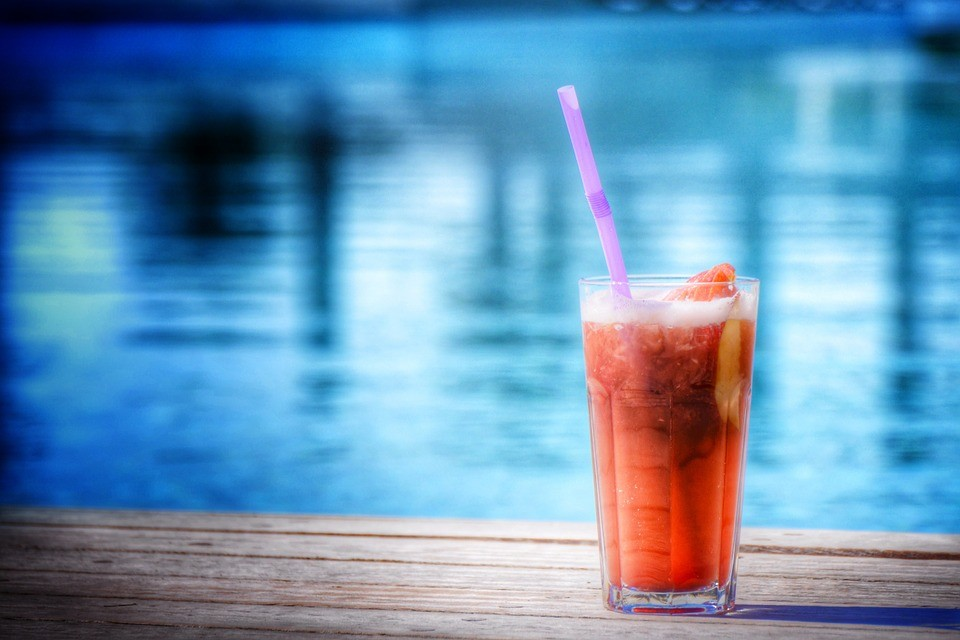

Por que tomar tragos sin alcohol?
Ofrecer alternativas no alcohólicas al vino o la cerveza es algo que agradecerán todas las personas que no pueden beber (ya sea por un embarazo o una condición médica), pero también todos aquellos a los que, sencillamente, no les apetece emborracharse o quieren cuidar su salud: hay que recordar que se considera un consumo de riesgo la ingesta en un día de más una copa o dos cervezas. Dar un abanico de opciones es algo fundamental.
Tragos
Cóctel Shirley Temple

Ingredientes
- 1 L de refresco de lima-limon
- 150g de cerezas en conserva
- 1 naranja
- Granadina a gusto
Preparacion
Simplemente debemos colocar todos los ingredientes en una jarra con abundante hielo (incluido el almíbar de las cerezas), reservando para decorar un par de rodajas de naranja y algunas cerezas (también conocidas como guindas o marrasquinas, que es el nombre de la variedad usada). Por último se puede añadir un chorrito de granadina, que le da más color y sabor al cóctel.
Coctel San Francisco
Ingredientes
- 15 cl de zumo de naranja
- 3 cl de zumo de limon
- 6 cl de zumo de piña
- 3 cl de zumo de melocoton
- 3 cl de granadina
- Hielo
Preparacion
Uno de los más clásicos cócteles sin alcohol, o 'mocktail', que debe prepararse en coctelera, como si de un combinado con alcohol se tratara. Basta añadir todos los zumos en la coctelera, agitar bien, y servir la mezcla en un vaso alto y ancho, tipo Collins, repleto de hielo. Se puede decorar con una rodaja de naranja y una guinda.